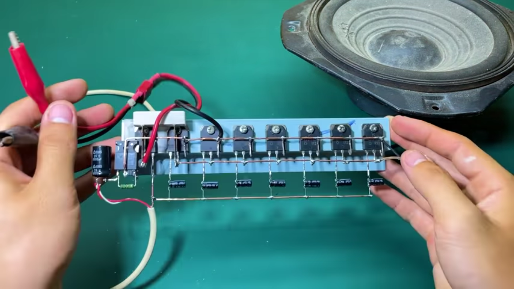
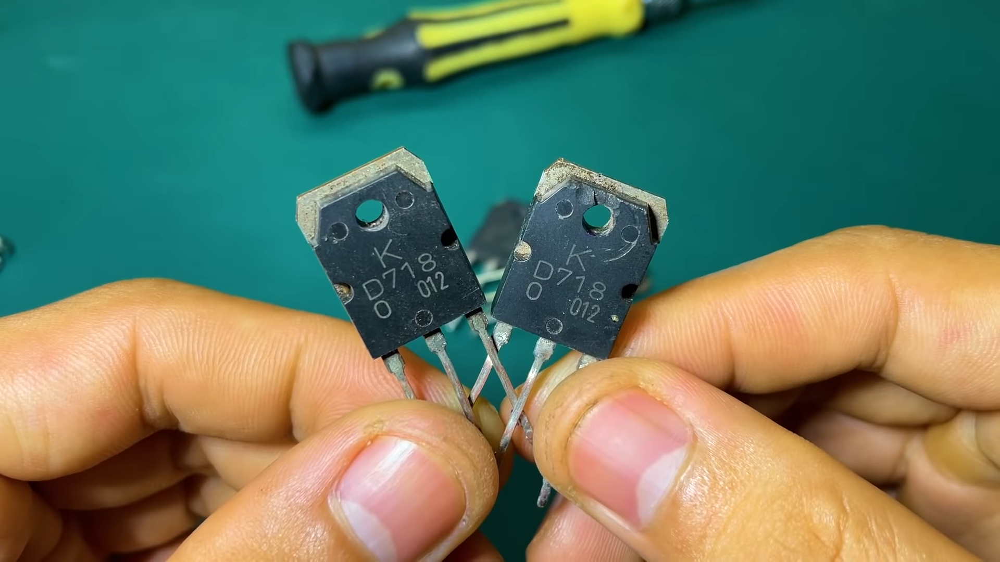
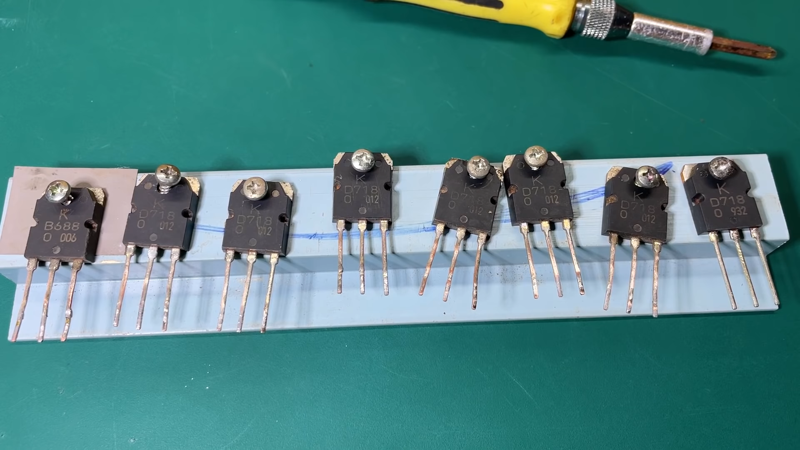
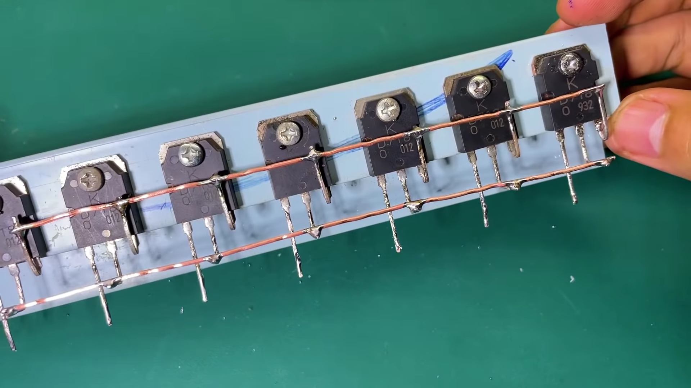
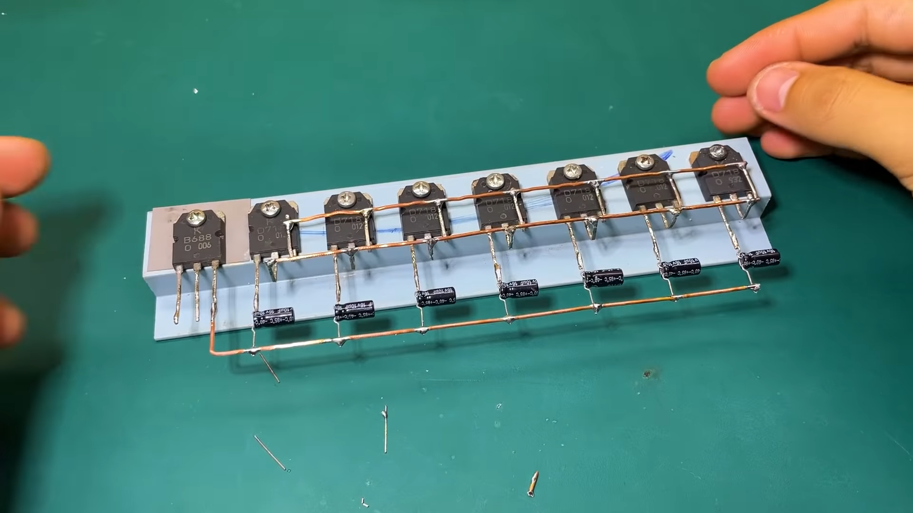
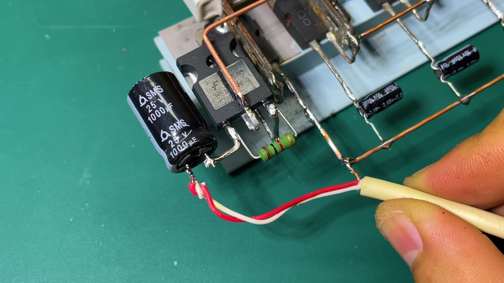
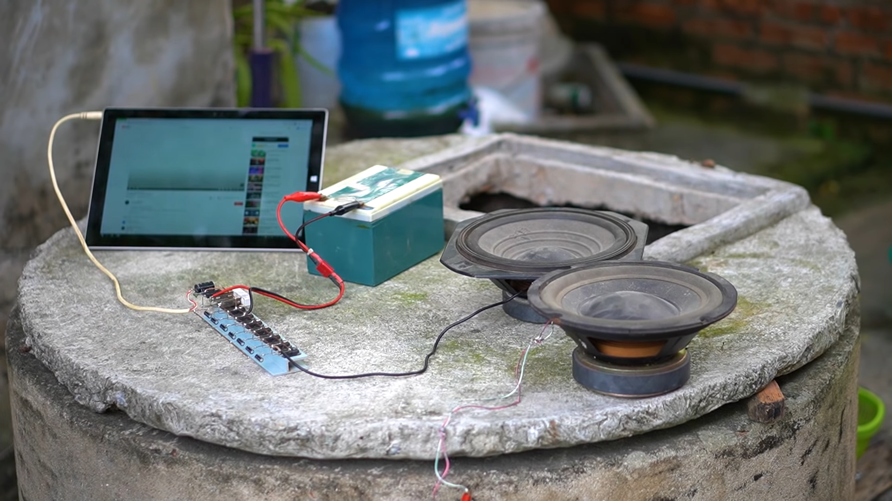

Nuestro servicio

1Integrantes
• FLORES HILGES HELEN CRISTAL
• GOMEZ MERCHAN MIGUEL GREGORIO
• GUALE GONZALEZ ANDRES JOEL
• PIN QUIMIS JUAN JOSE
2Aplificardor de sonido
Un amplificador de audio es un dispositivo que contiene circuitos electrónicos que permiten aumentar o amplificar las señales de audio y entregar una potencia necesaria para los altavoces o parlantes.
3Materiales
• Transistor
• Capacitor o condensador
• Resistor
• IGBT
• Audio line
• Power line input
4Objetivo
Realizar un mini amplificador de audio utilizando diversos componentes como un circuito operacional entre otros por medio de los arreglos básicos con capacitadores, transistores, entre otros.
Galeria





